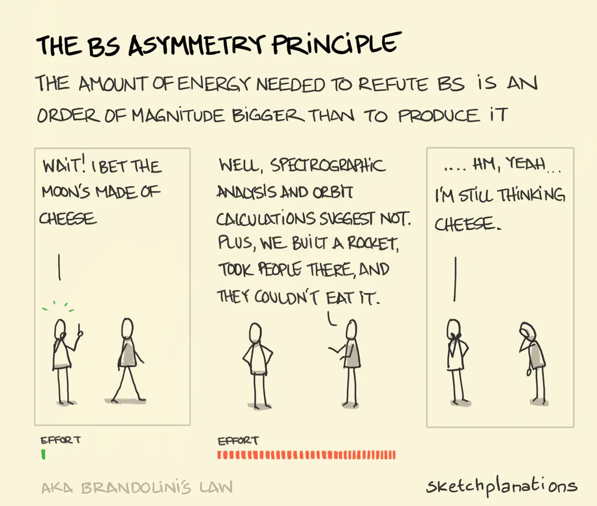

The Bullshit Asymmetry Principle

A friend recently shared the illustration above with me. It is inspired on the post by Alberto Brandolini, who coined the name.
I responded by pointing out that the burden of proof rests with the person making the claim, not the listener. Ideally, a simple "prove it" or "provide evidence" should suffice to dismiss it with little effort. Christopher Hitchens put it best:
What can be asserted without evidence can also be dismissed without evidence — Hitchens's razor.
If humans were purely rational scientists, it would be that simple. Reality is, well, a bit more complicated... Imagine you are discussing with moon-is-made-of-cheese-guy. Two situations may arise:
- there are only the two of you in the room;
- someone else is present (and they do not have their mind set on the issue);
(This dichotomy is an over-simplification, but it is still a useful thought experiment).
(1) If you are unwilling to listen and understand the other person, I utterly recommend that you drop the conversation! The reason is simple: they are most likely not open to listening to you either (belief perseverance).
Don't get me wrong, I have had plenty of conversations like this, and I deeply value listening, even when I disagree. I asked questions out of curiosity and genuinely tried to understand their perspective. In the end, I learned a lot about how they see the world. Yet, despite my best efforts, they didn't listen to a word I said.
You might choose to engage to understand their point of view better. However, doing so to change their mind is unlikely to succeed.
(2) When someone else is present, or will listen or read the discussion later, those are your real audience, not your opponent. You will not convince the person you're debating with, since they are not open to listening.
In essence, I am advocating for open-mindedness and empathy but also for choosing your battles wisely. After all, you can only persuade those willing to listen.
Links
- Brandolini's Law:
- Hitchens's Razor:
- Burden of Proof:
- Misinformation Detection:
- Williamson, P. (2016). Take the time and effort to correct misinformation. Nature, 540, 171 - 171.
- Calling Bullshit Book page;
- Calling Bullshit in the Age of Big Data by the Information School of the University of Washington - YouTube playlist;
- Evidence of Absence Wikipedia page;
- False Balance Wikipedia page;
- Belief perseverance:
Editions
- Original post: 2025-05-19;